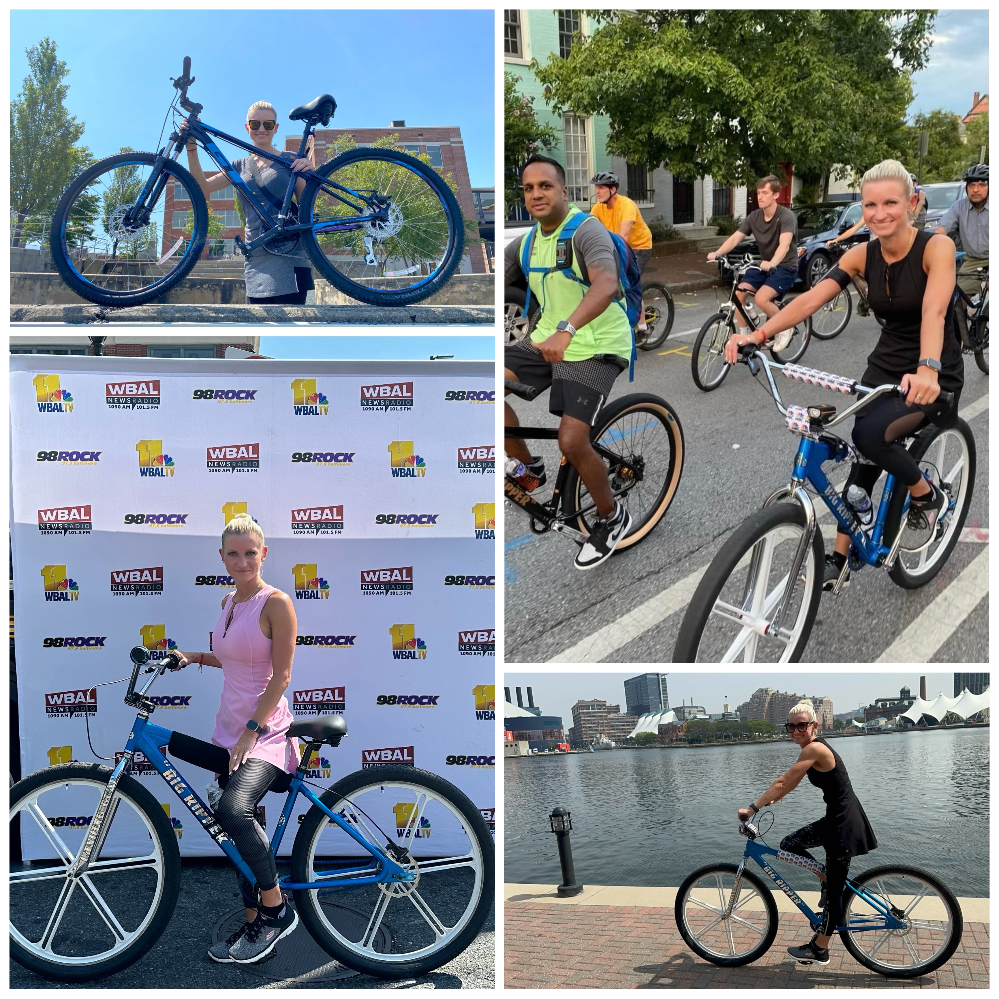

Who doesn’t like to bike? I think everyone does, myself included. Think about it: it is a good cardio workout, and also you can run errands biking. Besides that, you can meet new people as well. I’ve recently found out about The Baltimore Bike Party: it is an event that brings bikers from all over the city for a fun evening ride through the streets of Baltimore.
